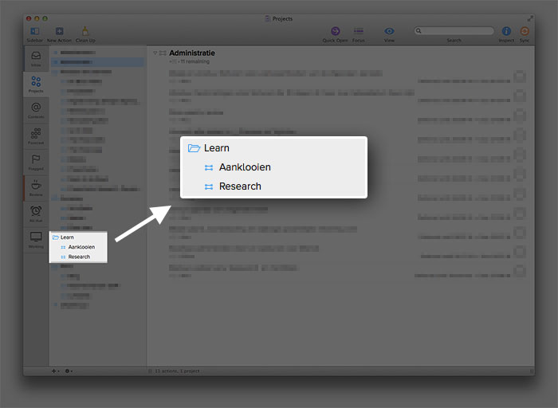

Research, development en professioneel aanklooien
YO

^ Sinds het begin van Fronteers een vakbroeder, full-hybrid designer/developer. Geen praatje over de relatie tussen design en development. Ik wil het graag over een van mijn hobbies hebben.
Hobbies
Hobbies
Hobbies
- Hearthstone
- Game of Thrones
^ Wat deze twee hobbies gemeen hebben is dat elke dag nieuwe content over het onderwerp online wordt gezet dat je in je leven niet kan lezen. Dat raakt mijn derde hobbie ook heel erg.
Hobbies
- Hearthstone
- Game of Thrones
- Dingen leren
Dingen leren
^ Ik moet mezelf goed bijhouden omdat ik met beide benen in twee vakgebieden sta.
^ Hoe doen andere dat?
^ Leren als doel an sich, andere weten namelijk altijd alles veel beter dus de beste in iets worden kan geen doel meer zijn.
^ Laat je vooral niet kennen door mensen die meer weten dan jij. Vroeger kon je nog de slimste van het dorp zijn, nu is de wereld een dorp geworden en heb je 7 miljard concurenten.
Leven lang leren
^ Ons vakgebied ontkom je er niet aan. Andere vakgebieden zullen niet veel anders worden. Technologie ontwikkeld zich in rap tempo en alle bedrijven worden uiteindelijk technologiebedrijven. Het is straks niet belangrijk wat je weet maar hoe snel je je kan aanpassen aan de nieuwe realiteit.
^ ‘Een leven lang leren’ staat sowieso op de maatschappelijke agenda. Politiek richt zich erg op traditionele instituten. Ikzelf hou meer van de DIY aanpak.
Aanklooien
^ Mensen doen maar wat, klooien maar wat aan, als je nooit iets probeert kom je ook nergens. Het zit in onze genen.
Professioneel aanklooien
^ Ik wil het niet hebben over ‘aanklooien gone wrong’ maar over ‘professioneel’ aanklooien.
Aanklooien
- Niet weten waar je heen gaat maar toch gaan of
- Weten waar je heen wilt maar niet hoe
Professioneel aanklooien
- Niet weten waar je heen gaat maar toch gaan of
- Weten waar je heen wilt maar niet hoe
- Weten wat de consequenties zijn als het fout gaat
- Niet alles moet nieuw voor je zijn
- Doe gewoon op je gemakkie, ga niet te snel
^ Apple, Google, Facebook en Twitter zijn grofweg zo ontstaan. Columbus is zo naar Amerika gevaren. Op hackathons wordt aangeklooid. Het elektrische scheerapparaat is een uitvinding van Philips, uitgevonden buiten het beeld van de toenmalige directeur Anton Philips in een soort aanklooiteam. Als ik het verder over aanklooien heb dan bedoel ik ‘professioneel aanklooien’.
Het web behapbaar maken
^ Om te beginnen met aanklooien moet je of weten waar je naartoe wilt of weten wat je wilt gaan doen. Het web vormt daarbij de grootste inspiratiebron.
Een systeem
Een systeem
- Verzamel
- Verwerk
- Doen
Een systeem
- Verzamel (brainstorm/research)
- Verwerk (schetsen)
- Doen (wireframen)
^ Deels gebaseerd op GTD (wat is GTD?), deels gebaseerd op mijn werkzaamheden als ontwerper
Verzamel
^ Verzamelen doe ik de hele dag door. Via allerlei kanalen komen er interessante artikelen, video’s en opensource projecten mijn kant op. Via twitter, rss (hackernews25, persoonlijke blogs van frontenders, a list apart etc.), wikipedia safari’s, mailinglijsten, noem maar op. Deze sla ik allemaal op. Alles waarvan ik maar het vermoeden heb dat het interessant kan zijn sla ik op. Voorbeeld Yoeran.
Voorbeeld: Font-naming in SCSS van Yoeran


Opslaan in een verzamelbak
^ Maak het voor jezelf zo makkelijk mogelijk. Zoek naar plugins voor je browser, integratie met twitter en rss apps.
Voorbeelden van integratie
- Tweetbot kan overweg met Reading List en Pinboard
- Pinboard heeft een handige bookmarklet
- Pinboard zit in IFTTT
- Voor Alfred zijn er workflows voor Pinboard
Sparkfile
- Sparkfile voor ideeen die geen links zijn
^ Er zijn natuurlijk ook andere zaken dan links waar je tegenaan loopt zoals een idee voor een nieuw project of product of een boek dat je wilt lezen. Bewaar deze in een sparkfile.
Verwerk
Weggooien, doen of opslaan
- Is het interessant genoeg? Nee, weggooien
- Is het binnen een paar minuten te doen of te lezen? Ja, doe het nu
- Is het interessant en niet meteen te doen? Opslaan in je takenbak.
^ Alle verzamelbakken verwerk je eens in de zoveel tijd. Maximaal een uurtje per week moet voldoende zijn.
Takenbak
^ Een takenbak kan van alles zijn, zolang het maar de enige plek is waar je kijkt voor het doen van taken. Dit komt voort uit de GTD filosofie. Mijn favoriete takenbak is Omnifocus.
Voorbeeld Yoeran: Lees het artikel
^ Ik lees het artikel vluchtig en besluit dat ik ermee wil aanklooien. Hoe en wat weet ik nog niet, maar ik ga het een keer toepassen. Ik zet het in Omnifocus.

Zet een duidelijke actie voor jezelf klaar
Doen
Doen
- Ruim aanklooitijd in
- Maak van leren je hobby
- Blijf nieuwsgierig
^ Kwestie van tijd inruimen. Pak je takenbak erbij en doe waar je zin in hebt. Ik heb het misschien wat makkelijker als freelancer, maar het zou eigenlijk goed zijn van je baas om je hiervoor tijd te geven. Je baas moet zich niet afvragen wat de consequenties zijn van het toelaten van aanklooitijd, de baas moet zich afvragen wat de consequenties zijn als je die tijd niet krijgt.
Extra zaken om op te letten
Verander 1 ding binnen process
- Sass ipv Less
- Bourbon ipv bootstrap
- Atom ipv Sublime Text
Ga open source
- Het verandert de manier waarop je naar je eigen code kijkt
- Documentatie wordt ineens belangrijker en geeft inzicht in je keuzes
- Je leert iets over het distribueren van je code (composer, bower etc)
- Direct feedback van vakgenoten
Fork en klooi aan
- Timebox een periode om aan te klooien
- Verander en bekijk het resultaat
^ Timeboxen van aanklooien met een open source project. Zo ben ik begonnen met het leren van php via hotscripts.com in 2000.
Hou de schade beperkt
- Superduper, Timemachine, Dropbox
- 1password, Homebrew en Cask + brewfile (bv. mijn brewfile), Git, Vagrant
^ Ik was altijd een beetje bang voor de commandline. Maar toen ik voor de zoveelste keer aan mijn ouders vertelde ‘probeer gewoon, je kunt eigenlijk niks kapotmaken’ ging ik dat principe ook op de commandline toepassen.
Hou de schade beperkt in een project
- Branch alsof het niks is
^ Door veel te branchen en dingen uit te proberen zorg je ervoor dat je kunt experimenteren binnen bestaande projecten en toch het project verder niet in gevaar brengt.
Hou een logboek bij
- Na formatteren Mac
- Initialiseren van een project
^ Na formatteren systeem logboek bijgehouden, staat openbaar online in Gist.
Leer tussen de bedrijven door
- Podcast luisteren (in de auto, de trein, tijdens het afwassen)
- Youtube kanalen (tijdens het strijken bv. Voorbeelden: Universiteit van NL, Fast Moving Targets, TED)
Begin gewoon
^ Dingen die je je afvraagt, gewoon doen. Podcast begonnen door gewoon te beginnen. The Panel vanuit een behoefte. Presentatie door 1 ding te veranderen.
- De Appels en Peren Show
- The Panel: Slow Crowd Curated Links Platform
- Deze presentatie in Deckset gemaakt ipv Keynote.